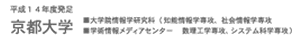
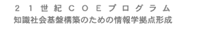

共催ワークショップ
- The second International Workshop on Man-Machine Symbiotic Systems
November23 - 24, 2004,
Kyoto University Clock Tower Centennial Hall, Kyoto, Japan
- 第一回「異文化コラボレーション」シンポジウム
2004年11月27日（土） 13:00-18:00
京都大学芝蘭会館山内ホール
- International Workshop on Massively Multi-Agent Systems
December 10-11, 2004
Kyoto Research Park, Kyoto, Japan
- The Third International Conference on Creating, Connecting and Collaborating through Computing
January 28 - 29, 2005
Shiran Kaikan, Kyoto University, Kyoto, Japan
|  |  |